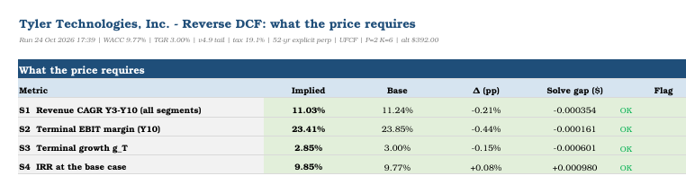

Published research
Tyler Technologies (NYSE: TYL): Initiation of coverage, 27 October 2026. Tyler sells software and payments to US state and local government. FY2025 revenue was US$2,332m, 87% of it recurring, as the installed base moves from on-premises maintenance to SaaS.
Variant view, from the note
Revenue growth as a result of legacy software conversion is more synergistic than what market consensus suggests. We see revenue in 2027 and 2028 growing 13% and 14.4% respectively. This represents a significant uplift from consensus estimates of 9.8% / 8.2%.
Pivotal questions and our answers
| # | Question | Answer |
|---|---|---|
| 1 | Will organic SaaS revenue growth hold at or above 20% in each of FY2026, FY2027 and FY2028? | Yes |
| 2 | Will maintenance revenue fall by at least 7% in each of FY2027 and FY2028? | Yes |
| 3 | Will GAAP operating margin reach 20% or more in FY2028? | No |
Scenarios, US$ per share at the 12-month target date
| Case | Probability | Target | Return | Subscription growth FY27 to FY29 |
|---|---|---|---|---|
| Bull | 25% | 446.58 | +35.5% | 22%, 23%, 24% |
| Base | 50% | 395.74 | +20.1% | 19%, 20%, 21% |
| Bear | 25% | 300.33 | -8.9% | 14%, 14%, 14% |
| Probability-weighted | 100% | 384.60 | +16.7% |
Source: TYL initiation, 27 October 2026. Returns on the US$329.55 reference price (close, 9 October 2026).
Next: Macquarie Technology Group (ASX: MAQ), initiation in progress.
Track record
Every call stays on the record, whichever way it goes. Notes are never edited after publication; changes go into a dated thesis update.
| Note | Rating | Target | Reference price | Latest close | Move | Target reached | Falsifiers |
|---|---|---|---|---|---|---|---|
| TYL initiation, 27 Oct 2026 | Buy | US$395.74 | US$329.55 | US$424.06 | +28.7% | 2 Nov 2026 | 2 at risk, 1 not yet testable |
Prices as at the 13 November 2026 close. Absolute share price moves, not relative to a benchmark. No revised target has been published.
Falsifiers committed before publication
| # | The thesis is wrong if | Status |
|---|---|---|
| 1 | Organic SaaS growth is below 18% for two consecutive quarters, from Q3 2026 | At risk. Q3 printed 16.3%; Q4 (February 2027) decides it |
| 2 | Maintenance revenue declines by less than 5% for two consecutive quarters in 2027 | Not yet testable |
| 3 | FY2026 revenue comes in below US$2,575m, the top of the original guidance | At risk. The top of guidance was trimmed to US$2,565m in October |
Notional portfolio
The research feeds an AUD 10,000 notional portfolio run under a written investment policy: a 50/50 S&P 500 and S&P/ASX 200 total return benchmark, a +300bp objective, sizing by conviction tier, and mandatory exit when a falsifier breaches. It has been in cash since inception on 1 September 2026. A position needs a published Buy that still clears +12% on the publication date, and TYL closed that day at US$378.62, leaving +4.5% to target.
How I research
Business model analysis
How the company makes money, unit economics, moat, failure modes, what the price implies.Private workpaper
Earnings memos
Ten points per quarter: reported against consensus, KPIs, guidance credibility.Private workpaper
Model
Three statements, forecast, DCF, reverse DCF and Monte Carlo in Model RG.Screenshots below
Initiation
About 24 pages, 20 sections, four gates where drafting stops for my judgement.Published
Monitoring
Falsifier status each quarter, thesis updates, and the track record.Published
Standing rules
- The reverse DCF leads. Valuation opens with what the price already requires, then argues why that path is wrong.
- The method fits the business: forward DCF, sum of the parts or multiples on a named comp set, with the reason stated.
- Three falsifiers, committed before publication. Specific, observable and dated. A share price fall doesn't count.
- Every note argues against itself. The Red Team makes the strongest case against the rating and tests whether the falsifiers can fire.
- Numbers are computed, not typed. Every table is recalculated in Python before publication, and a 27-point tie-out runs on every note.
Valuation engine: Model RG
A company-agnostic valuation engine in Excel VBA, with about 7,500 lines of code across 22 modules and 394 named ranges. One Assumptions sheet drives everything else. Every covered name gets its own copy, and no rated note is published without one.
Exhibit 1: At US$329.55 the price required 11.03% revenue growth from year 3 to year 10, against 11.24% in our base case

Source: Model RG, Tyler Technologies run, 24 October 2026.
How I use AI
I use Claude as a research associate under written rules that predate the first note. It does the work a junior associate would do. The judgement stays with me, and every judgement call in a note can be traced to the person who made it.
I write
- The thesis and the variant view
- The pivotal questions and my answers
- The rating, conviction and target decision
- Scenario probabilities
- The three falsifiers
- The conclusion and the decision journal
AI does
- Data from filings, transcripts and terminals
- Exhibits, tables and three-statement history
- Descriptive sections, at my direction
- The Red Team against my rating, labelled as such
- Arithmetic checks and the Gate 4 tie-out
- An independent check of each draft against sources
At four gates in every initiation, drafting stops until my judgement goes in. AI never drafts a placeholder in my sections. More on the workflow and tooling
About
- RoleClient Services Representative - Analyst, CMC Markets, Sydney (since January 2026)
- EducationBachelor of Business Administration, Finance and Accounting, University of Wollongong (2025). Academic record
- Research